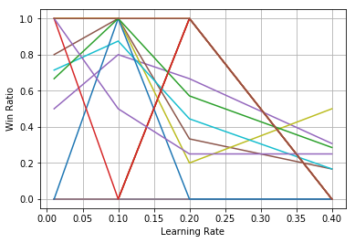
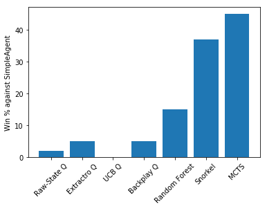
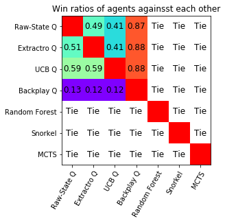

Introduction
Bomberman is a classic game where 4 players try to bomb each other, where the last player standing is declared winner.
Pommerman is competition between AI players in a few variations of Bomberman. In the variation we tried to solve, there are rigid walls that can't be destroyed and wooden walls that can be destroyed and might turn into a powerup any player can take. These walls are placed randomly in each game.

Approach and Method
Q-learning
Each turn, the agents recieve a list of parameters that reperesnt the current game state. Then, we can use those parameters to describe a state and as a result we can model the game as a MDP. Therefore, it seemed reasonable to try a Q-learning agent
We tried a few version of Q-learning:
- Whole state - we used the full set of parametes sent from the game as a state representation.
- Extracted state - we extracted data from all parameters to get information we think is useful.
- Upper confidence bound (UCB) - the previous agents used ε -greedy for exploration. UCB chooses actions according to how confident it is about the actions' values.
- Backplay - Each agent gets a reward only at the end of the game. Backplay is a method we used to propagate the rewards faster.
Random Forest and Snorkel
Snorkel is a framework that labels unlabeld data using a set of user-made heuristics. We used this framework for 2 different agents:
- Random Forest - Using Snorkel we could label the states of the game. Using those labels we trained a random forest by playing games with deterministic agents.
- Snorkel Prediction - We used Snorkel in a way that for each action gives the probabily that it's the correct action (label). We then chose the action with the best probability.
Monte Carlo Tree Search (MCTS)
Monte Carlo Tree Search is a popular tree search method that uses random sampling of branches in the search tree to estimate which child-node is most likely to yield a victory. We use Upper Confidence Bound to balance exploration and exploitation trade-off in the deeper nodes of the tree.
Results
One of the things we tried is figuring what parameters we should use for Q-learning. We chose one free parameter and set the two others and measured their win ratio (wins divided by games played):

Each line represents a different pair of ε and γ. We can see that a learning rate of 0.1 has the best chance to win. We chose the discount and epsilon in the same way.
After training the Q-learners and other agents, we put them all against the deterministic baseline player provided by the Pommerman team. Those are their winning percantages against it:

It is hard to learn about the Q-learning performance, so we've also played all of our agents against each other. Their win ratio shown below:

We learn 2 intersting things from this table:
Conclusions
We can see that our Q-learning agents didn't perform well. This is a complex and rich game, and to fully utilize the Q-learning method would require a lot more time and work. This idea is explained further in the report.
On the other hand, we have 2 agents that had a much better success rate: the Snorkel agent and the MCTS agent. Although the MCTS agent performed the best, each action takes a long time to compute. Too long for it to play a real game. It might get better time if we had used a neural network. The Snorkel Agent also performed well, and it takes relatively less time to act.
Additional Information
References
- Pommerman github
- Resnick, Cinjon, et al. "Backplay: 'Man muss immer umkehren'." arXiv preprint arXiv:1807.06919 (2018)
- Ratner, Alexander, et al. "Snorkel: Rapid training data creation with weak supervision." Proceedings of the VLDB Endowment 11.3 (2017): 269-282